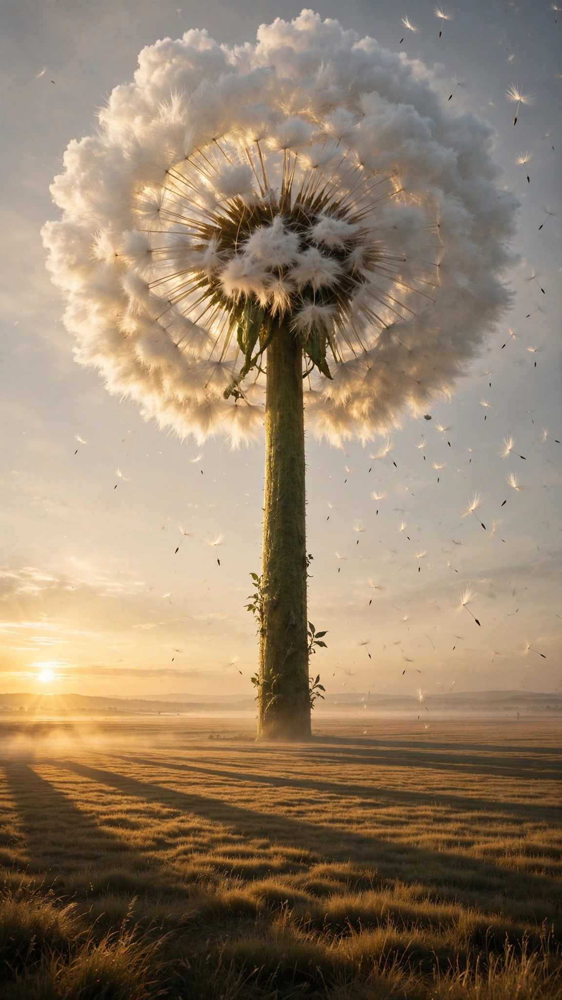
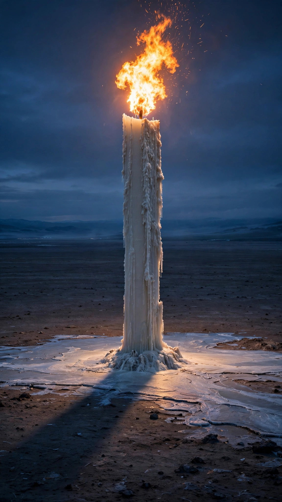
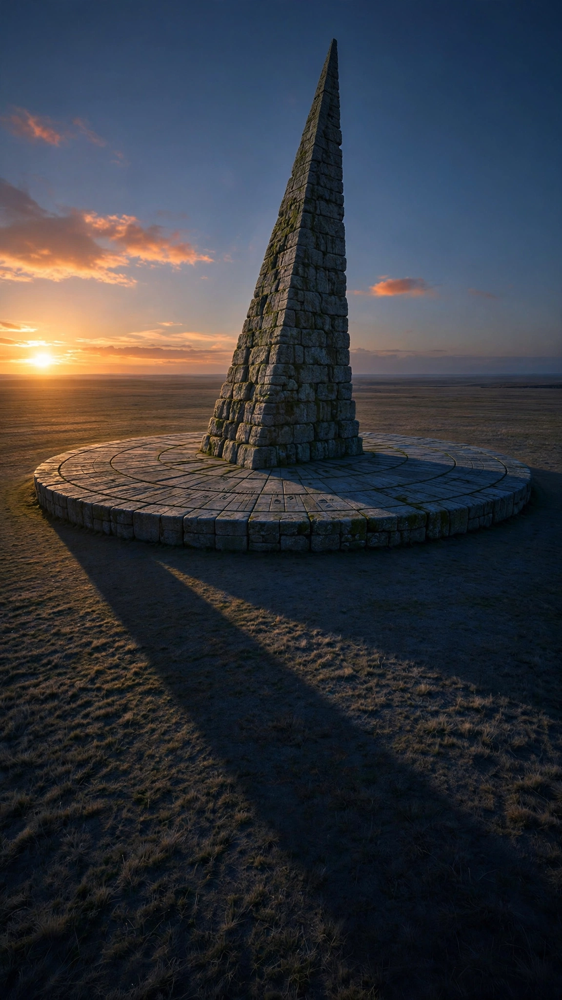
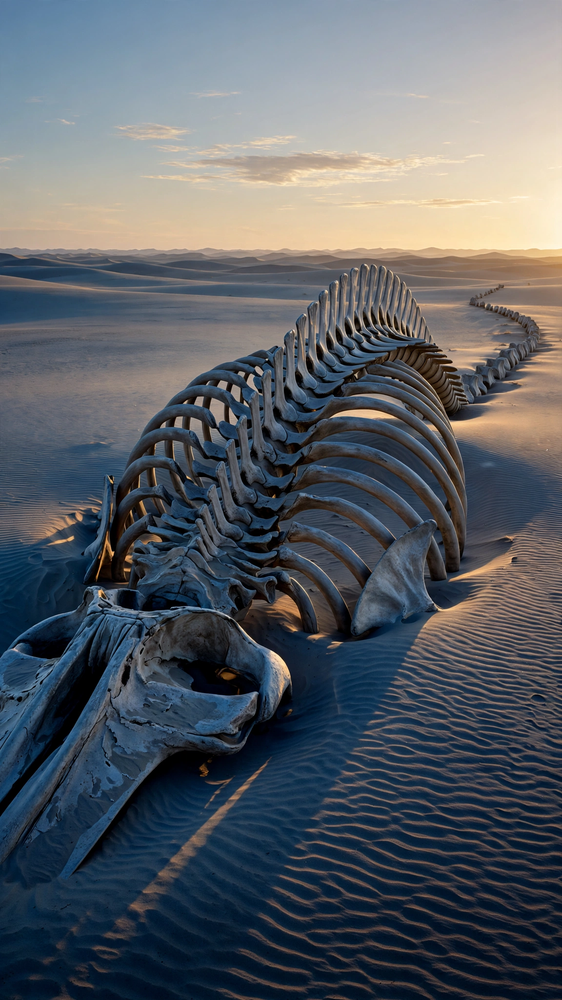

空旷 · 简单 · 巨物 · 震撼

One dandelion, taller than a building, holding the whole sunrise in its seeds. #GiantNature #MorningLight
一朵比楼还高的蒲公英，把整个日出都托在了种子上。

One candle, tall as a tower, burning alone in the dark — the only light for miles. #GiantCandle #NightLight
一支高如塔楼的蜡烛，在黑暗中独自燃烧，是方圆几里唯一的光。
A crown too big for any king, resting on top of the world as the sun goes down. #GiantCrown #MountainDusk
一顶大到不属于任何国王的王冠，在日落时分戴在世界之巅。

A sundial the size of a mountain, measuring the first ray of morning sunshine. #GiantSundial #GoldenHour
一座山一样大的日晷，正在丈量早上的第一束阳光。

A whale that once crossed oceans now rests in the middle of nowhere. #WhaleSkeleton #DesertDawn
一头曾经横渡大洋的鲸，如今躺在荒漠正中。
One bell, and the whole valley holds its breath. #GiantBell #DawnValley
一声钟鸣，整个山谷都屏住了呼吸。